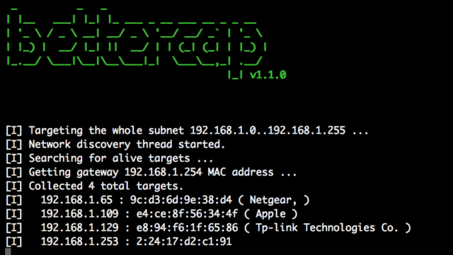
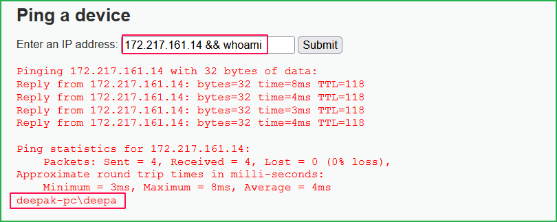
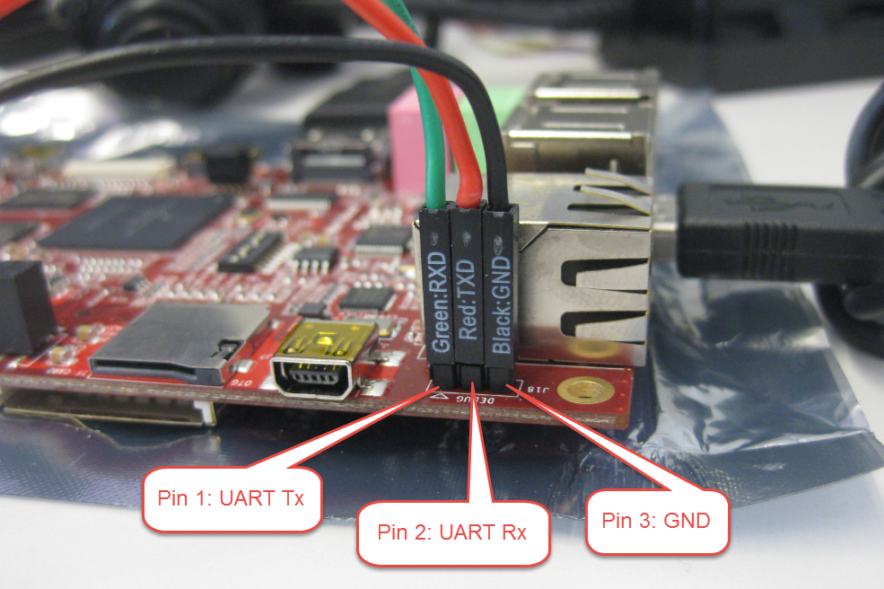
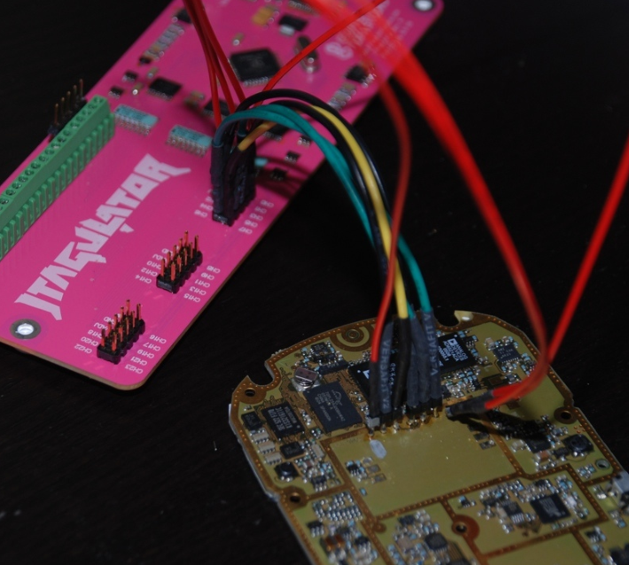
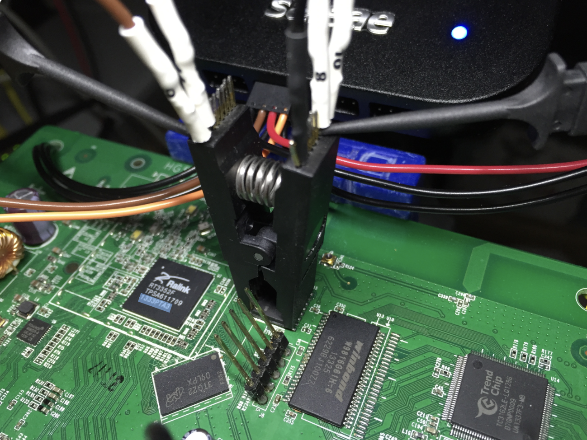
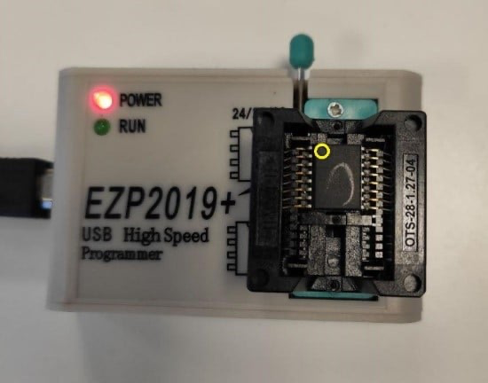
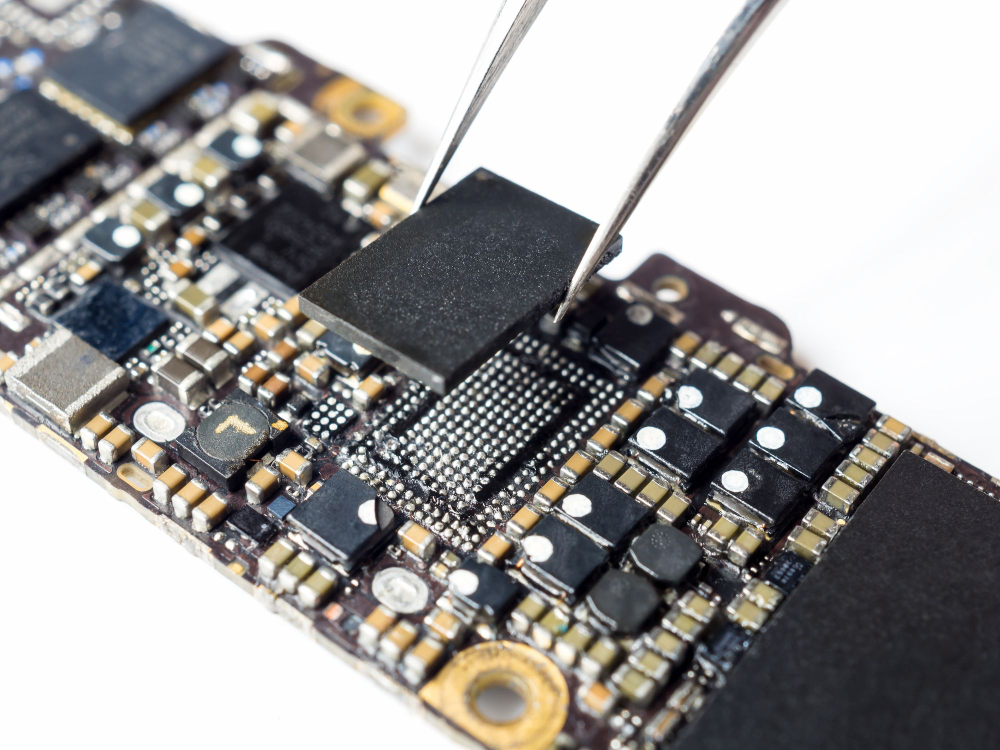
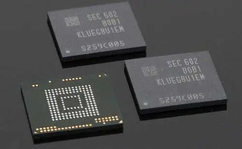

Extracting Firmware: All Methods
The first step in finding vulnerabilities in some kind of IoT device is getting its firmware. 5-10 years ago, it was extremely easy: firmware of every device was available on the manufacturer’s website. And while it’s still true in some cases, now there’s no more a one-size-fits-all solution. Now we have several ways of getting firmware, ranging from very easy to very hard.
Download: Very Easy
Maybe the manufacturer still offers firmware for download to everyone in need. Even if that’s not the case, sometimes firmware or some parts of it could be leaked or available somewhere else. So it’s worth searching (I recommend specifically searching Github alongside your usual search engines/Google dorks) and, if it doesn’t break your local laws, downloading.
MITMing Update Process: Easy to Moderate

If the previous option didn’t work and your device has just one shiny button labeled “Install update,” it’s worth pressing it, but not before you’ve started a proper MITM with traffic capture. There are a variety of tool choices, from Bettercap to Mitm-proxy.
The idea here is that despite the widespread adoption of HTTPS, some developers may still use plain HTTP CDNs for distributing updates. Then, the update package can be easily extracted from the traffic, or you can capture the URL and follow it.
But let’s say your target uses HTTPS. Then we have 2 different scenarios:
1. Standalone Target
If the target is self-sufficient and doesn’t have any mobile apps or desktop clients for control, you can still try to make it use your self-signed HTTPS certificate, with decent chances of success.
2. Target with Mobile App
Many smart devices don’t have their own UI and require a smartphone app for control. In some cases, the firmware download may be implemented in the app itself. You can then install your own self-signed root certificate on the smartphone or emulator you’re using. If internet connectivity features in the app stop working, it indicates the use of SSL pinning. Of course, there are various techniques to bypass this, such as using Frida.
Here’s something to read on that topic:
-
https://infosecwriteups.com/hail-frida-the-universal-ssl-pinning-bypass-for-android-e9e1d733d29
-
https://redfoxsec.com/blog/ssl-pinning-bypass-android-frida/
-
https://infosecwriteups.com/hail-frida-the-universal-ssl-pinning-bypass-for-android-e9e1d733d29
If those aren’t enough, you’re in for some reverse engineering, my friend. Try to find and understand how they implement SSL pinning, or even better - how they download the update itself (sometimes dumping strings can go a long way).
Dumping Firmware through a Vulnerability: Moderate - ???

Some targets can be very special: either in-development devices, devices with no software update feature, or devices that require a highly paid technician certified by the manufacturer using special tools to update them. In either case, playtime is over.
If you’re in luck, your device might have an unpatched older vulnerability that allows you to get a root shell (or any other kind of code execution) and dump the damn thing. If there’s also a public exploit for the bug, I’d tell you to go buy a lottery ticket. Otherwise, you have to develop an exploit yourself, but that’s already much easier when you have even a basic vulnerability description.
New, but Low Hanging Fruit
In most cases, you’ll have to find a vulnerability yourself. You might be thinking now: “What are you talking about? We need the firmware to search for vulnerabilities in the first place.” Well, I’m gonna tell you that they haven’t canceled black box testing so far. Of course, it’s harder without the firmware, so we’re gonna make things a bit easier for us.
The most dangerous, feared, and valuable vulnerabilities are those that can be exploited without authentication. The majority of security researchers look for these, and the majority of manufacturers focus on securing their devices against them. But then we have vulnerabilities that can be exploited after authentication, let’s say even with admin rights. In that case, we have a wider attack surface paired with softer targets. It gives us an opportunity to find a lower hanging code execution, dump the firmware, and then use it to find something more interesting.
The Hardware Way: Moderate - Very Hard
The hardware way is generally harder but still could be easier than the previous option, in some cases.
It falls into two categories: trying to find and exploit hardware vulnerabilities and reading firmware directly from flash storage.
Hardware Vulnerabilities
There are various types of hardware vulnerabilities out there, but here we’re mostly interested in exposed debug interfaces like UART shells or JTAG/SWD.
UART Shells

UART interfaces are a common sight in IoT devices, often left accessible for diagnostics. By tapping into these UART ports, you can sometimes gain console access (and I’m talking about root/bootloader shell). The key lies in identifying the TX, RX, and GND pins, and then using a serial-to-USB converter and a terminal emulator to communicate with the device. This method can be a straightforward and effective way to start unraveling the inner workings of an IoT device.
Some links on the topic:
JTAG/SWD Interfaces

Designed for testing and debugging at the chip level, these interfaces offer low-level access to a device’s CPU. Pinpointing the JTAG or SWD pins on a packed PCB is the first step (assuming those are exposed at all, hehe), followed by interfacing with a debugger like J-Link or ST-Link. Once connected, these interfaces allow for stopping firmware execution, inspecting memory, and so on. Some manufacturers know about this and try to disable or hide these interfaces, protect them with passwords, etc. But, of course, some don’t. And we wouldn’t be hackers if we didn’t try, right?
Those post may help you to figure out JTAG:
Fun with Flash Chips
This sweet-sweet firmware we’re looking for has to be stored somewhere. For the majority of smart devices out there, this somewhere will be a flash chip. If it’s stored there, it can be read from there. In fact, this is what the CPU of your target is doing when it boots up! But we don’t have access to the CPU, so we have to find another way, which is interfacing with the chip directly or desoldering the flash chip from the PCB and reading it out using a special device.
Flash Sniffing/Controlling Through SPI/I2C/etc.

Flash chips communicate with CPUs, MCUs, and SoCs using protocols like SPI. These protocols are standard, so we can use them too. When a device powers up, its CPU reads the flash memory, the perfect time for sniffing data using a logical analyzer. But here’s the catch: depending on your device, it can read just a portion of the firmware. So you might need to get a full control of the chip to read it out.
Here’s a selection of posts going into a deep dive in that:
-
https://securityboulevard.com/2023/02/exploiting-embedded-apis-by-dumping-firmware/
-
https://jcjc-dev.com/2016/06/08/reversing-huawei-4-dumping-flash/
-
https://www.nsideattacklogic.de/en/dumping-spi-flash-memory-of-embedded-devices-2/
Of source, a flash chip needs power to function. Without desoldering it and giving power to one leg of the chip, it might wake up the entire PCB, leading to a tug-of-war over the flash between you and the CPU. A workaround? Desolder the VCC leg – less work, but more potential to damage the chip. Another approach is to desolder the whole chip; it will also make it more comfortable to use it in a flash programmer.
Flash Chips in QFP, TSOP and Other Non-BGA Packages

For a flash in a QFP (Quad Flat Package), the process involves carefully heating the solder to remove the chip without damaging the PCB or the chip itself. Once the chip is removed, you can read its contents using a flash programmer.
One of the tricks is to use an alloy with a low melting point. This technique involves applying a special alloy to the chip’s legs. This alloy mixes with the standard solder, reducing its overall melting point. It allows you to lift the chip off the board without turning the whole area into a miniature inferno.
Some reading on dumping firmware with desoldering:
eMMC/SPI Flash in BGA Package

eMMC flash in BGA (Ball Grid Array) packages presents its own set of challenges. Desoldering a BGA package requires precision and skill, as the solder balls are underneath the chip, making it difficult to heat them evenly without damaging the chip or the board. After removal, a BGA socket adapter or a direct solder method on a flash reader is used to interface with the chip. This approach requires specialized equipment and a steady hand, but it’s a reliable way to access the firmware directly.
Further reading if you’re brave enough to tackle BGA:
https://blog.quarkslab.com/flash-dumping-part-i.html
https://riverloopsecurity.com/blog/2020/03/hw-101-emmc/
UFS Flash in BGA Package

This is even harder than the previous one. But if the previous case was hard for your hands, this will also be hard for your wallet. Thing is, UFS is a new, much faster protocol for flash memory. And that makes UFS flash programmers much more rare and much more expensive. I wouldn’t be surprised if somebody DIYs some crazy low-cost UFS programmer in their garage, but for now, we have what we have. Or maybe there’s a way to repurpose a USB stick with UFS flash chip on board into a makeshift flash reader?
I don’t have personal experience with dumping UFS nor was I able to find a decent source for it, but here’s a link to a flash programmer that claims it supports UFS:
https://evision-webshop.eu/dediprog/nuprog-e2-engineering-universal-programmer
Edge Cases
In some scenarios, manufacturers implement additional security measures like read-out protection, encryption of firmware at rest, or unique protection mechanisms. These measures require a more nuanced approach. Each of these edge cases requires a unique approach, often involving a combination of hardware and software reverse engineering skills to bypass these protections. But that’s the fun of it, right?
Image sources: